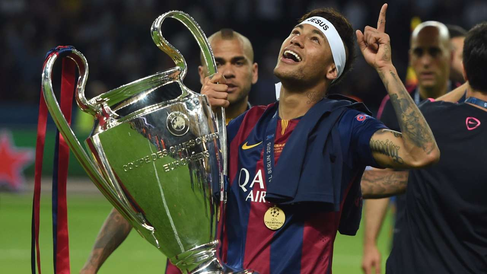
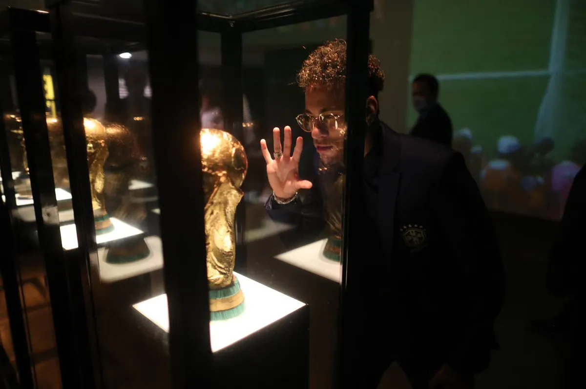
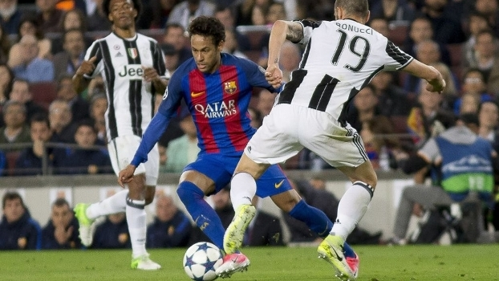

<!DOCTYPE htm1>
<htm1 long=’’pt-br’’>
      <head>
                 <meta charset=’’UTF-8’’>
                 <title>t</title>
                 <link rel=’’stylesheet’’ hfet=’’style.css’’>


                 <style>
                       p {
                             text-aligan: center
                       }
                 </style>
      </head>
      <body>
              


              <h1 style=’’text-align: center; backgrund: #CCCCCC’’>O Legado Imortal de Neymar: Campeão da Copa do Mundo e Melhor Jogador do Mundo</h1>


             


<p>O mundo do futebol é repleto de lendas, nomes que transcendem o tempo e marcam gerações com seu talento inigualável. Um desses nomes é Neymar Jr., um jogador excepcional que conquistou os corações dos torcedores ao redor do globo com sua habilidade única e seu estilo inconfundível. Nesta redação, exploraremos a hipotética narrativa em que Neymar alcança o auge de sua carreira, sagrando-se campeão da Copa do Mundo e sendo reconhecido como o melhor jogador do mundo, conquistando todos os títulos possíveis no cenário futebolístico mundial.<st-ong> </strong> Neymar, desde o início de sua carreira, demonstrou uma habilidade inata para o futebol. Com sua velocidade, técnica e inteligência de jogo, ele se destacou em todas as equipes em que jogou, mostrando um talento que não poderia ser ignorado. Seus dribles desconcertantes e suas jogadas magistrais cativaram a atenção de fãs e especialistas ao redor do mundo, tornando-o uma figura de destaque no cenário esportivo.
Ao longo dos anos, Neymar desenvolveu sua carreira em alguns dos maiores clubes do mundo, ganhando títulos nacionais e internacionais, como a Liga dos Campeões e diversos campeonatos nacionais.
</p>


<p>No mundo do futebol, existem jogadores que conseguem encantar as multidões com sua habilidade, destreza e criatividade em campo. Neymar Jr., sem dúvidas, é um desses jogadores. Conhecido por sua maestria nos dribles e pela capacidade de fazer verdadeiras mágicas com a bola, o jogador brasileiro merece todo o reconhecimento e sucesso que tem alcançado ao longo de sua carreira. Nesta redação, discutiremos a importância de Neymar como um dos melhores dribladores do mundo e por que ele merece conquistar tudo que há de melhor.</p>
    


<p>Seu desempenho consistente e determinação incansável o levaram a se tornar um dos jogadores mais valorizados do mundo.
   Ainda assim, Neymar tinha um objetivo em mente: ganhar a Copa do Mundo e ser reconhecido como o melhor jogador do mundo. Após anos de dedicação e trabalho árduo, a oportunidade finalmente chegou. Representando a Seleção Brasileira, Neymar liderou o time com garra e maestria, inspirando seus companheiros a darem o melhor de si.
   Durante o torneio, Neymar demonstrou sua genialidade em campo, marcando gols espetaculares e criando jogadas que deixaram os adversários perplexos. Sua visão de jogo e capacidade de decisão em momentos cruciais mostraram por que ele era considerado um dos melhores jogadores de todos os tempos.
   A final da Copa do Mundo foi um momento épico. Com o estádio lotado de torcedores apaixonados, Neymar e sua equipe enfrentaram uma equipe formidável. A partida foi intensa, repleta de emoções e reviravoltas. No entanto, Neymar, com sua habilidade única, marcou o gol da vitória nos minutos finais, selando assim o título para o Brasil.
   Após a conquista do título mundial, Neymar foi agraciado com o prêmio de Melhor Jogador do Mundo.</p>


<em> <strong>"A trajetória de Neymar, com a conquista da Copa do Mundo e o título de Melhor Jogador do Mundo, torna-se um exemplo de dedicação, talento e perseverança. Seu legado transcenderia"</strong>.</em></p>


<p>Essa honraria reconheceu sua contribuição excepcional para o futebol e confirmou seu lugar na história como um dos maiores jogadores que já pisaram em um campo de futebol.</p>


</p>

<p> Neymar, desde seu início no futebol, demonstrou talento excepcional e uma habilidade natural para driblar seus oponentes. Sua capacidade de acelerar, mudar de direção rapidamente e driblar com precisão tornam-no um verdadeiro pesadelo para os defensores. Seus dribles são rápidos, elegantes e, muitas vezes, surpreendentes, deixando os adversários desconcertados e a plateia maravilhada.

</p>



<p>Além de sua habilidade técnica, Neymar é dotado de uma visão de jogo única. 
    Sua capacidade de antecipar o movimento dos oponentes e criar jogadas improváveis é um dos fatores que o tornam um dos melhores do mundo. Ele é capaz de enxergar espaços onde ninguém mais vê, criando oportunidades de gol para si mesmo ou para seus companheiros de equipe.
     Neymar tem a capacidade de fazer a bola parecer parte integrante de seu corpo, tornando-se um verdadeiro artista no campo.

    O jogador brasileiro também é conhecido por sua agilidade e equilíbrio impressionantes. Ele é capaz de driblar adversários em espaços reduzidos, deslizando pela defesa como se estivesse patinando no gelo. Sua habilidade de manter o controle da bola mesmo em situações complicadas faz dele um jogador imprevisível e difícil de ser marcado.
    
    Neymar já provou seu talento em diferentes competições e clubes. 
    Ele conquistou títulos importantes na Europa, como a Liga dos Campeões e o Campeonato Espanhol, e também se destacou em nível internacional com a seleção brasileira, conquistando a Copa das Confederações e a medalha de ouro nos Jogos Olímpicos.
     Sua dedicação ao esporte e sua busca constante pela excelência fazem dele um atleta admirável e inspirador.
    Neymar Jr. é, indiscutivelmente, um dos melhores dribladores do mundo. Sua habilidade técnica, visão de jogo e agilidade o tornam um jogador único e excepcional. Seus dribles são verdadeiras obras de arte, capazes de encher os estádios de aplausos e cativar fãs de todas as idades. 
    Por seu talento e dedicação ao esporte, Neymar merece conquistar tudo que há de melhor. Que ele continue a encantar o mundo com sua magia e a brilhar nos gramados, deixando seu legado como um dos maiores jogadores da história do futebol.
</p>

<em> <strong> confira em baixo alguns dos seus lances</strong>


    <video src="neymarskills.mp4.mp4"
    controls
    >
        
    </video>

      </body>
</htm1>
